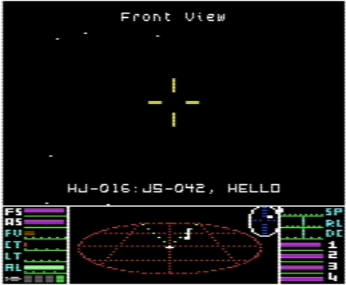

Nové klávesové příkazy
Za letu:
I— Aktivuje dotazovač I.F.F.Ctrl + 2— Otevře obrazovku Jettison.
Po přistání:
Ctrl + 2— Otevře obrazovku Sell Equip.Ctrl + 3— Otevře obrazovku Buy Ship.
Obrazovka Status
Obrazovka Status byla rozšířena o další údaje.

Ship: ADDER JS-042
Zobrazuje typ aktuální lodi a její registrační ID.
EQUIPMENT (1t)
Zobrazuje celkovou hmotnost veškerého nainstalovaného vybavení kromě řízených střel. Střely jsou umístěny ve vyhrazených závěsech v trupu lodi, a proto nezabírají místo v nákladovém prostoru. Celková hmotnost nainstalovaného vybavení se odečítá od maximální kapacity nákladového prostoru lodi. Čím více vybavení tedy nainstalujete, tím méně místa zbude pro náklad.
Obrazovka Inventory
Obrazovka Inventory byla rozšířena o další údaje.

INVENTORY (0t/8t)
Zobrazuje zbývající kapacitu pro náklad a za ní celkovou kapacitu nákladového prostoru lodi. Od celkové kapacity se odečítá hmotnost nainstalovaného vybavení a zbytek je k dispozici pro náklad. V tomto příkladu má neupravený nákladový prostor Adderu celkovou kapacitu 8t. Nainstalovaný Front Pulse Laser zabírá 1t, jak ukazuje údaj EQUIPMENT (1t) na obrazovce Status, a zbývajících 7t zabírá náklad. Volná kapacita je tedy 0t.
Instalace Large Cargo Bay zvětší celkovou kapacitu nákladového prostoru o hodnotu, která závisí na typu lodi. Toto rozšíření je automaticky zahrnuto do zobrazené celkové kapacity.
Obrazovka Sell Equip
Nainstalované vybavení lodi lze nyní prodávat. Obrazovku Sell Equip otevřete po přistání stisknutím Ctrl + 2. Vybavení se vykupuje za 50 % pořizovací ceny.

Každá nainstalovaná položka je postupně nabídnuta k prodeji s otázkou (Y/N)? U řízených střel se zobrazí jejich celkový počet, ale každým potvrzením se prodá pouze jedna. Chcete-li prodat další střely, znovu otevřete obrazovku Sell Equip.

Large Cargo Bay lze prodat pouze tehdy, pokud se aktuální náklad lodi po odstranění rozšíření vejde do základního nákladového prostoru. V opačném případě se zobrazí EQUIPMENT?, pokud součet hmotnosti nákladu a nainstalovaného vybavení překračuje základní kapacitu, nebo CARGO?, pokud se nevejde samotný náklad.
Při výměně jednoho laseru za jiný na obrazovce Equip Ship platí odlišné starší pravidlo: nainstalovaný laser se započte za 100 % své pořizovací ceny. Přímý prodej laseru prostřednictvím obrazovky Sell Equip vrátí pouze 50 %.
Obrazovka Buy Ship
Nyní lze kupovat nové lodě. Obrazovku Buy Ship otevřete po přistání stisknutím Ctrl + 3.
Obrazovka zobrazuje seznam právě nabízených lodí a jejich pořizovací ceny. Dostupnost závisí na ekonomice systému; v anarchických systémech se navíc nabízejí lodě z černého trhu.

Před koupí nové lodi je nutné prodat veškeré běžné nainstalované vybavení, protože je nelze přenést do nového trupu, a také nadbytečné střely, které nová loď neunese. Naval Energy Unit je z tohoto požadavku vyňata a přenese se do nové lodi.
Při koupi nové lodi se stávající náklad zachová. Ověří se, zda se vejde do základního nákladového prostoru nové lodi. Přenášená Naval Energy Unit se započítává jako 1t.
Koupě může být zamítnuta jednou z následujících zpráv: CASH?, EQUIPMENT?, CARGO? nebo MISSILES?.
Obrazovka Equip Ship
Na tuto obrazovku byla přidána I.F.F. Unit, kterou lze koupit od Tech Level 7 výše.

Jedinou další změnou je, že ceny vybavení se nyní liší podle typu lodi, kterou řídíte.
V obzvlášť pochybných systémech zde možná najdete i méně legální možnosti.
Odhazování nákladu za letu
Za letu lze nyní odhodit jeden nákladní kontejner o hmotnosti 1t. Obrazovku Jettison otevřete stisknutím Ctrl + 2.

Jednotlivé druhy nákladu, které lze odhodit, se postupně zobrazí s otázkou (Y/N)? Vybrat lze jakékoli zboží přepravované v jednotunových kontejnerech kromě Alien Items. Potvrzením volby se odhodí jeden kontejner o hmotnosti 1t. V kontejneru zůstane vybrané zboží, takže jeho opětovné nabrání pomocí Fuel Scoops vrátí stejný druh nákladu.
Úspěšné odhození potvrdí pípnutí a poté se zobrazí obrazovka INVENTORY.
VAROVÁNÍ! Odhazování nákladu v bezpečnostní zóně většiny stanic je nezákonné a může nepříznivě ovlivnit váš právní status.
Obsluha transpondéru a dotazovače I.F.F.
Toto nové zařízení umožňuje včas rozpoznat nepřátelská plavidla a identifikovat ostatní lodě.

Jednotka I.F.F. je plně integrována do zaměřovacího systému řízených střel a dokáže pracovat také samostatně, pokud na palubě nejsou žádné řízené střely.
Jednotku I.F.F. aktivujete klávesou I. Pokud jsou na palubě řízené střely, klávesa I plní stejnou zaměřovací funkci jako klávesa T pro zaměřování střel a zaměření probíhá naprosto stejně. Po zaměření cíle se zobrazí jeho registrační ID, pokud je vysíláno; v opačném případě se zobrazí ??-???.
Pokud na palubě nezůstala žádná řízená střela, klávesa I aktivuje dotazovač. Pípnutí podobně jako při zaměřování střely oznámí připravenost k zaměření cíle. Po zaměření se zobrazí registrační ID cíle a dotazovač se vypne. Před zaměřením jej lze vypnout ručně klávesou U.
Transpondér pracuje automaticky a nevyžaduje žádnou obsluhu. Registrační ID vaší lodi se vysílá nepřetržitě, jak GalCop vyžaduje od každého plavidla ve vesmíru.
Nepřátelské kontakty jsou označeny také na skeneru.

Tyto kontakty mají hlavičku značky ve tvaru písmene T namísto otočeného tvaru písmene L, který se používá pro ostatní kontakty.
Zobrazení odměny
Po zničení cíle se na vylepšeném zobrazení odměny ukáže odměna získaná za daný cíl namísto celkového zůstatku kreditů po jejím přičtení.

Postup při dokování u stanice
Stanice nyní mají chráněný přibližovací koridor, který vede směrem ven od dokovacího vstupu.

Každá loď, která se v tomto koridoru zbytečně zdržuje, obdrží od stanice varování. Dokud je koridor obsazený, žádná loď nedostane povolení ke startu.
Rádiová komunikace

Pokud obdržíte komunikační zprávu od jiné lodi nebo stanice a právě se nacházíte na jiné obrazovce než v kokpitu, na novou zprávu vás upozorní krátké pípnutí. Po návratu do kokpitu se zobrazí poslední přijatá zpráva.